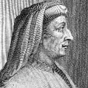

Floransa’daki pek çok anıtın tasarlanmasından sorumlu olan Filippo Brunelleschi (1377-1446), İtalyan mimari tarihinin en önemli isimleri arasında kabul edilmektedir. Başyapıtı olan Duomo, klasik Roma mimarisi ile Rönesans’ın iyimser ve hümanist anlayışını birleştirerek yeni ve iddialı bir mimari tarzın gelişimini müjdelemiştir.

Bir kuyumcu ve heykeltıraş olarak yetiştirilen Brunelleschi, ilk olarak şehir vaftizhanesine bronz bir kapı yapacak mimarı belirlemek için düzenlenen yarışmada adını duyurmuştur (1401). Her ne kadar yarışmayı Lorenzo Ghiberti (1378-1455) kazanmış olsa da yarışmaya katılmış olması yirmi dört yaşındaki Floransalı sanatçıyı dönemin gelecek vadeden mimarları arasına soktu.
1418 yılında şehirde Floransa Katedrali’nin tamamlanması için yeni bir yarışma düzenlendi. Katedral daha sonra yapıya kubbe eklenmesi için büyük bir boşluk bırakılarak inşa edilmişti. Ne var ki yapıda herhangi bir hasara yol açmadan inşaatın nasıl tamamlanabileceği bilinmiyordu. Katedral, gücünün ve zenginliğinin doruklarına yaklaşan Floransa’nın büyüklüğünü simgelemek amacıyla inşa edilmişti.
Brunelleschi ikinci denemesinde Ghiberti’yi alt etmeyi başardı. Çalışması Antik Roma harabelerinden ve mimari kaynaklardan ilham almıştı. Tepesinde bir fener bulunan sekiz kenarlı kubbenin inşası için Brunelleschi’nin ömrü boyunca çalışması gerekti. Öldüğü zaman bile eserinin halen tamamlanmayan bölümleri vardı. 35 bin ton tuğla ile yapılan kubbe tamamlandığında, dünyadaki benzer örnekler arasında büyüklük açısından ilk sırada yer alıyordu.
Duomo’ya ek olarak Brunelleschi bir hastane, birkaç kilise ve bir saray tasarladı. Ayrıca Floransa’nın Pisa ile olan savaşlarından birinde askeri tahkimatların hazırlanmasına yardım etti. Duomo için gereken tuğlaların taşınması için kullanılabilecek yeni tipte bir nakliye aracı geliştirmeye çalıştı. Ne var ki bu çabasında başarısız oldu. Brunelleschi 1446 yılında öldü ve tasarladığı katedralin altına gömüldü.
Ek Bilgiler
1- Floransa’nın mimari güzelliği o kadar etkileyicidir ki şehre gelip onun görkeminden etkilenen misafirler arasında “Stendhal Sendromu” adı verilen özel bir rahatsızlığın ortaya çıktığı tespit edilmiştir. Bu hastalık adını, 1817 yılında şehre geldiğinde bu hastalığın semptomlarını göstermeye başlayan Fransız yazar Stendhal’dan (1783-1842) almıştır.
2- Duoma inşa edilene kadar “Roma Pantheonu” 1300 yıl boyunca batının en büyük kubbesine sahip olmuştur. Yaklaşık 44 metrelik Duoma, 43 metrelik Pantheon’u kılpayı farkla aşabilmiştir.
3- Brunelleschi’nin mezarı 1972 yılında keşfedilmiştir. Mezar katedralin güney koridorunun altında bulunmaktadır.